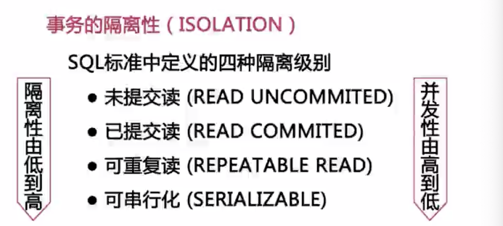
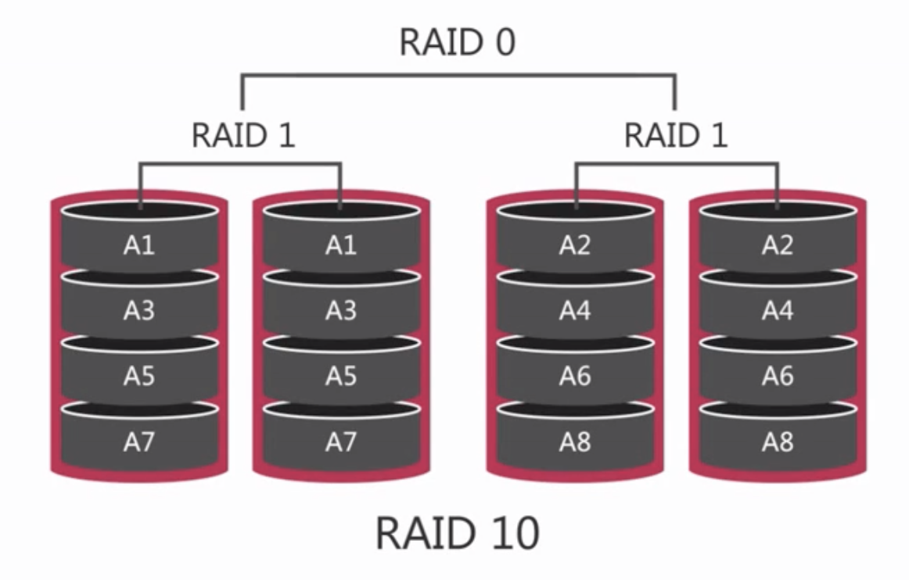
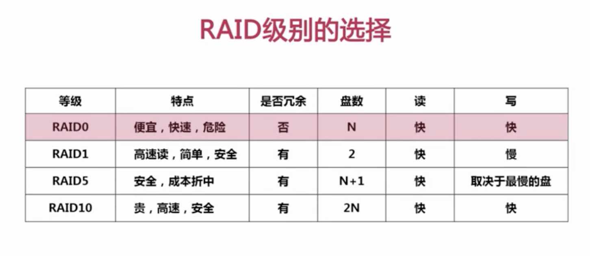

mysql 实战
[TOC]
影响数据库性能的因素
数据库需要完整性和一致性，相对不容易扩展。


（最好不要在主库上进行数据备份）
QPS ：每秒处理的查量
TPS：每秒事物数
超高的QPS和TPS：80%的数据库问题都是慢查询导致。
大量的并发和超高的cpu使用率
- 大量的并发：数据库连接数倍占满（max_connections,默认100)
- 超高的cpu使用率：因cpu自由耗尽而出现宕机。
磁盘io，磁盘io性能突然下降。（大促前调整维护计划）
网卡流量：网卡io被占满（1000Mb/8 相当于 100MB）
- 减少从服务器的数量
- 进行分级缓存
- 避免使用“select *”进行查询
- 分离业务网络和服务器网络
其他
大表带来的问题（数据量超过千万行，表数据文件巨大，超过10G）
- 慢查询：很难在一定的时间内过滤出所需要的数据
- 建立索引需要很长时间，mysql<5.5 会锁表，="">5.5引起主从延迟。
- 修改表结构需要长时间锁表
- 造成长时间主从延迟
- 影响正常的数据操作
解决大表问题
- 分库分表（很少这么做），难点：分表主键选择，分表后跨分区数据的查询和统计。
- 大表的历史数据归档，减少对前后断业务的影响。难点：归档时间点的选择，如何进行归档操作
大事务带来的问题
事务时数据库系统区别于其他一切文件系统的重要特性之一
事务是一组具有原子性的sql语句。原子性、一致性、隔离性（未提交读、已提交读、可重复读，可串行化（很少使用））、持久性。
定义：一个事务必须被视为一个不可分割的最小工作单元，整个事物中的所有操作要么全部提交成功，要么全部失败，对于一个事务来说，不可能只执行其中的一部分操作。
事务的隔离型：隔离性要求一个事务对数据库中数据的修改，在未提交完成前对于其他事务是不可见的。

未提交读：可看到其他事务的修改。
已提交读：大部分默认隔离级别（除了Mysql），只能看到已提交事务的修改
可重复读：MySQL默认，在事务开始后，可重复读，不管其他事务是否已提交。
可串行化：会在读取的每一行数据上都加锁，基本不用。
show varibles like '%iso%';
set session tx_isolation='read-commited'
事务的持久性（durability）
定义：一旦事务提交，则其所做的修改就会永久保存到数据库中。此时即使系统崩溃，已经提交的修改数据也不会丢失。
大事务：运行时间比较长，操作的数据比较多的事务
风险
- 锁定太多的数据，造成大量的阻塞和锁超时
- 回滚时所需时间比较长
- 执行时间长，容易造成主从延迟
怎样处理大事务：
- 避免一次处理太多的数据
- 移除不必要在事务中的SELECT操作
目前mysql不支持多cpu并发运算。
什么影响了Mysql性能

那些因素影响数据库性能：
- 硬件情况
- 服务器操作系统，参数等
- 数据库存储引擎
- 数据库参数配置
- 数据库结构设计和SQL语句
服务器硬件
CPU资源
是需要更好的cpu还是更多的cpu。
- web项目适合更多的cpu，需要更高的并发量。
- 使用多个cpu需要选择更好的mysql版本
MySQL不支持多CPU对同一SQL并发处理
特别注意：
- 不要在64位使用32位的服务器版本。（检查操作系统位数，使用32位操作系统对系统极大限制）
- 64位的CPU一定要工作在64位的系统下
- 对于并发比较高的场景CPU的数量比频率重要
- 对于CPU密集性场景和复制SQL则频率越高越好
内存大小
内存极大影响数据库性能。
- 内存并不是越多越好，当内存==磁盘，再增加没有意义
- 对性能影响有限度
- 并不能无限增加性能
根据数据库热数据选择内存
特别注意：
- 选择主板所能使用的最高频率的内存，内存频率越高，对性能越好。
- 内存大小对性能很重要，所以尽可能的大
磁盘
传统磁盘
选择因素：存储容量、传输速度、访问时间、主轴转速、物理尺寸
传统磁盘，存储空间大，速度较慢。要选择转速快的。
raid技术，磁盘冗余队列的简称。简单来说Raid的作用就是把多个容量较小的磁盘组成一组容量更大的磁盘，并提供数据冗余来保证数据完整性的技术。
主要的raid级别
- raid 0 ： 组建磁盘整列最简单的形式，简单来说就是多个读磁盘组合在一起，没有提供冗余或错误修复能力。
- raid 1：有成为磁盘镜像。磁盘利用率仅有50%，成本高。数据冗余性好，读性能较好。大部分操作系统都可以通过软件实现raid 0 和raid1.
- raid 5 ：分布式奇偶校验磁盘阵列。整个整列只需要一块冗余。写很慢，随机读很快，适合以读为主的业务。最好使用在从数据库服务器上。
- raid 10 ：又称为分片的镜像。读写性能好，重建会很简单。

raid级别选择：

固态存储
优缺点：
相比于机械磁盘，固态磁盘有更好的随机读写性能
相比机械磁盘，固态磁盘能更好的支持并发
相比机械磁盘，固态磁盘更容易损坏
ssd：使用sata接口，可以替代传统磁盘而不需要任何改动。sata接口的ssd同样支持raid技术。
pci-E ssd：无法使用sata接口，需要独特的驱动和配置。价格比ssd要贵，性能比ssd好。
使用场景
- 适用于存在大量随机i/o的场景，热数据大小远大于内存。
- 适用于解决单线程负载的i/o瓶颈，比如从服务器上（单线程，易损耗）。
网络存储san和nas
是两种外部文件存储设备加载到服务器上的方法。
san设备通过光纤连接到服务器，设备通过块接口访问，服务器可以将其当作磁盘使用。
- 适合大量顺序读写，随机读写慢，不如本地raid磁盘。
nas设备使用网络连接，通过基于文件的协议如nfs或smb来访问，通过有网络传输的延迟。
适合场景：
- 网络存储不适合于mysql数据库存放数据，有人使用网络存储来实现高可用（牺牲性能）—牺牲性能，不易维护。
- 适合数据库备份
特别注意（I/O子系统）
- PCIe -》SSD（可以使用传统接口） -〉Raid10 -》磁盘 -〉SAN
网络性能限制
延迟 带宽
- 采用高性能和高带宽的网络接口设备和交换机
- 对多个网卡进行绑定，增强可用性和带宽
- 尽可能进行网络隔离
网络带宽对性能的影响
网络质量对性能的影响
建议：
- 采用高性能和高带宽的网络接口设备和交换机
- 对多个网卡进行绑定，增强可用性和带宽
- 尽可能的进行网络隔离
服务器系统
- windows：大小写不敏感，linux大小写敏感，可能在windows能跑，linux下不能跑。
- FreeBSD：老版本不行
- Solaris：稳定性著称
- Linux
- CentOs
在CentOS下哪些参数对Mysql性能有影响：
《Linux性能优化大师》
内核相关参数（/etc/sysctl.conf)
网络相关：
``` // 每个端口最大监听队列长度，负载大的一般会修改 net.core.somaxconn=65535 net.core.netdev_max_backlog=65535 net.ipv4.tcp_max_syn_backlog=65535
// tcp连接处理的等待状态的时间，用于加快tcp连接回收速度
net.ipv4.tcp_fin_timeout=10
net.ipv4.tcp_tw_reuse=1
net.ipv4.tcp_tw_recycle=1
// tcp 连接接收和发送缓冲区大小的默认值和最大值，对于数据库应用应该把这几个值调整的大一点
net.core.wmem_default=87380
net.core.wmem_max=16777216
net.core.rmem_default=87380
net.core.rmem_max=16777216
// 用于减少失效连接所占用的tcp系统资源数量，加快资源回收效率,可以适当改小些
net.ipv4.tcp_keepalive_time=120
net.ipv4.tcp_keepalive_intvl=30
net.ipv4.tcp_keepalive_probes=3
```
内存相关
// linux 内核参数中最重要的参数之一，用于定义单个共享内存段的最大值 // 注意： // 1. 这个参数应该设置的足够大，以便能在一个共享内存段下荣大整个的Innodb缓冲池的大小。 // 2. 这个值的大小对于64位linux系统，可取的最大值为物理内存值-1byte，建议值为大于物理内存的一半，一般取值大于Innodb缓着冲池即可，可以取物理内存-1byte kernel.shmmax=4294967295 // 这个参数当内存不足时会对性能产生比较明显的影响 // linux系统内存交换区：在linux系统安装时都会有一个特殊的磁盘分区，称之为系统交换分区，free -m可以查看到 // 在MySQL服务器上是否使用交换分区有一些争议：在MySQL服务所在的Linux系统上完全禁用交换分区 // 带来的风险： // 1. 降低操作系统的性能 // 2. 容易造成内存溢出，崩溃，或都被操作系统kill掉 // 结论：在MySQL服务器上保留交换区还是很必要的，但是要控制何时使用交换分区 // 就是告诉Linux内核除非虚拟内存完全满了，否则不要使用交换区 vm.swappiness=0其他配置


磁盘性能相关

cfq：完全公平队列，适合桌面系统，会在队列中插入不必要请求，响应时间慢


修改方法：

文件系统对性能的影响

数据库存储引擎的选择
插件式存储引擎
MyISAM：不支持事务，表级锁
InnoDB：